Home / Past papers / MLT End Term / this paper
IIT M DIPLOMA FN1 EXAM ETD1 11 Dec 2022 - 11 Dec 2022
- A decision stump
- A fully grown decision tree with randomly selected features for splitting thenodes.
- k-NN classifier with a smaller value of k.
- k-NN classifier with a larger value of k.
- 1, 4.9, 1, 5.2, 7.4, 1
- 0, 1, 0, 1, 1, 0
- 0, 4.9, 0, 5.2, 7.4, 0
- -1, +1, -1, +1, +1, -1
- -3.7, 0, -2.0, 0, 0, -8.3
- Learning rate may be too low; Try increasing it.
- Learning rate may be too high; Try reducing it.
- Number of features in the training data may be too low, try increasing them.
- Number of features in the training data may be too high, try reducing them.
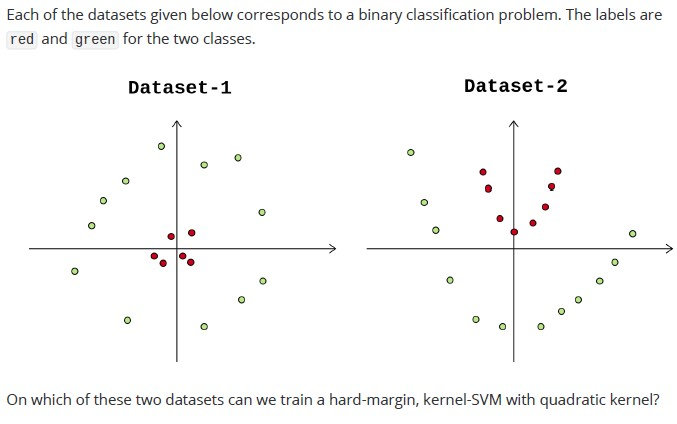
- Only dataset-1
- Only dataset-2
- On both dataset-1 and dataset-2
- Neither dataset-1 nor dataset-2
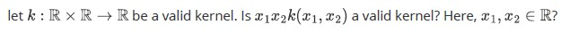
- YES
- NO
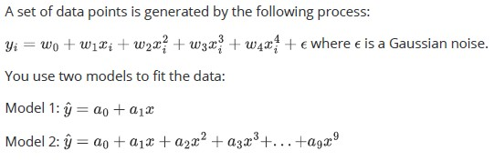
- Lower, underfit
- Lower, overfit
- Higher, overfit
- Higher, underfit
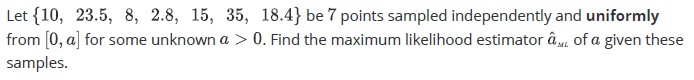
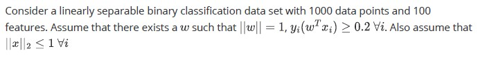
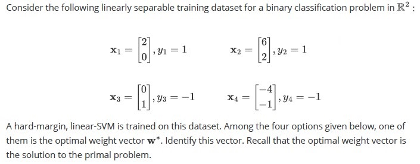
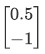
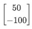
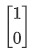
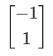
 Consider the following data set: Which of the following will have larger leave-one-out cross-validation error?
Consider the following data set: Which of the following will have larger leave-one-out cross-validation error? - 1-Nearest Neighbor
- 3-Nearest Neighbor
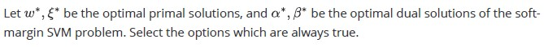
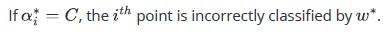
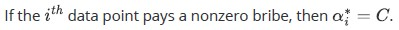
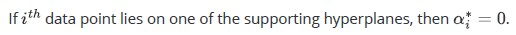
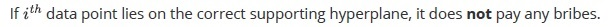
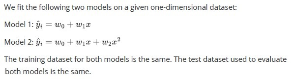
- Model 1
- Model 2
- Both will fit equally well
- Can not say
- Model 1
- Model 2
- It will depend upon the underlying distribution that generates the dataset andtherefore, can not say.
- Both will give the equal error
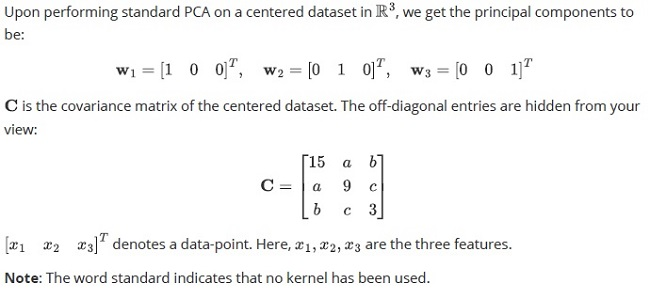
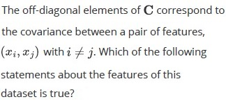
- Each pair of features has a strong positive correlation. For instance is, if x1increases, then x2 also increases.
- Each pair of features has a strong negative correlation. For instance is, if x1increases, then x2 decreases.
- Each pair of features is uncorrelated. For instance is, if x1 increases, we can saynothing about the trend of x2.
- Unless we know the exact values of the off-diagonal elements a, b and c , wecan't comment about the correlation among features.
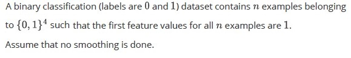
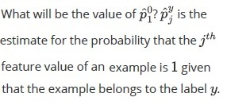
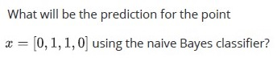
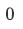
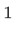
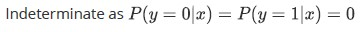
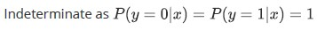
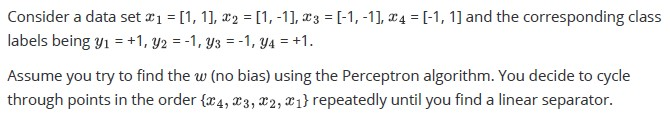
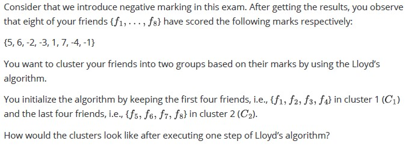
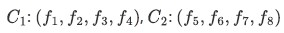
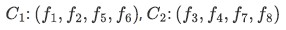
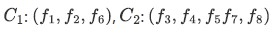
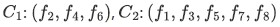
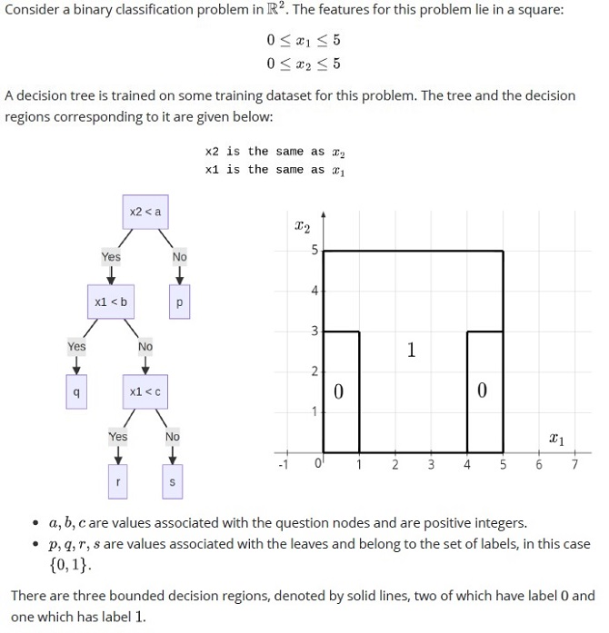
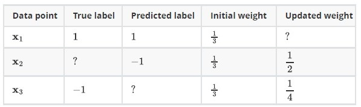
Consider a single iteration of the AdaBoost algorithm that was run on three sample points, starting with uniform weights on the sample points. The labels are either +1 or −1. In the table below, some values have been omitted. Based on the above data, answer the given subquestions.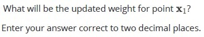
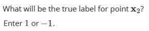
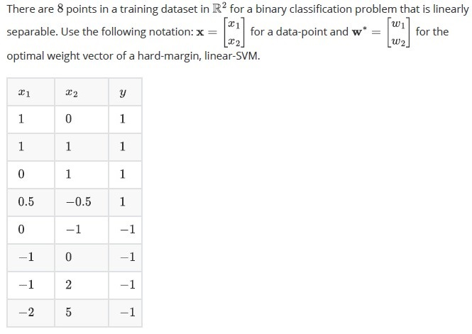
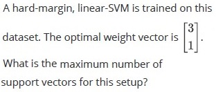
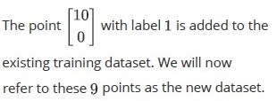
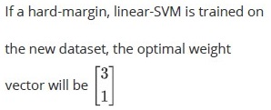
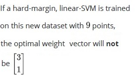
Answer key
- Q1 (MSQ, 2 marks): B, C
- Q2 (MCQ, 3 marks): C
- Q3 (MCQ, 3 marks): B
- Q4 (MCQ, 4 marks): C
- Q5 (MCQ, 4 marks): A
- Q6 (MCQ, 4 marks): C
- Q7 (SA, 4 marks): 187
- Q8 (SA, 5 marks): 35
- Q9 (SA, 5 marks): 25
- Q10 (MCQ, 5 marks): A
- Q11 (MCQ, 5 marks): A
- Q12 (MSQ, 5 marks): B, D
- Q13 (MCQ, 2.5 marks): B
- Q14 (MCQ, 2.5 marks): C
- Q15 (SA, 3 marks): 15
- Q16 (MCQ, 3 marks): C
- Q17 (SA, 3 marks): 1
- Q18 (MCQ, 3 marks): C
- Q19 (SA, 3 marks): 2
- Q20 (SA, 3 marks): 4
- Q21 (MCQ, 6 marks): C
- Q22 (SA, 1.5 marks): 3
- Q23 (SA, 1.5 marks): 1
- Q24 (SA, 1.5 marks): 4
- Q25 (SA, 2.5 marks): 2
- Q26 (SA, 2 marks): 0.23 to 0.27
- Q27 (SA, 2 marks): 1
- Q28 (SA, 3 marks): 0.31 to 0.35
- Q29 (SA, 4 marks): 5
- Q30 (MSQ, 4 marks): B, C
Concepts this paper tests
Auto-generated summary from the source site. Handy as a checklist; the lessons above explain each idea from scratch.
Here’s a structured summary of the core topics, concepts, principles, and equations essential for the "Diploma Level: Machine Learning Techniques" exam, followed by Mermaid knowledge graphs to visualize relationships.
Core Topics & Concepts
1. Supervised Learning
Linear Regression & Gradient Descent
Key Equations:
- Hypothesis:
- Loss (MSE):
- Gradient Descent Update:
Concepts:
- Learning rate () tuning (too high → divergence; too low → slow convergence).
- Feature scaling for faster convergence.
Logistic Regression
Key Equations:
- Sigmoid:
- Loss (Log Loss):
Concepts:
- Decision boundary, probability interpretation.
Support Vector Machines (SVM)
Key Equations:
- Hard-margin primal: s.t. .
- Soft-margin primal: s.t. .
- Kernel trick: (e.g., quadratic kernel).
Concepts:
- Support vectors, margin maximization, slack variables (), kernel SVM for non-linear boundaries.
- Complementary Slackness: .
- KKT Conditions: Primal/dual optimality conditions.
Decision Trees
Key Concepts:
- Splitting criteria (Gini impurity, entropy).
- Overfitting vs. pruning (pre/post-pruning).
- Feature selection at nodes (e.g., ).
Example:
- For Q23–Q26, interpret decision regions from tree structure (e.g., ).
k-Nearest Neighbors (k-NN)
Key Concepts:
- Lazy learning, distance metrics (Euclidean, Manhattan).
- Bias-variance tradeoff: Small → low bias/high variance; large → high bias/low variance.
- Bagging: Prefer models with high variance (e.g., fully grown decision trees, small in k-NN).
Naive Bayes
Key Equations:
- Posterior: .
- Likelihood (Bernoulli): .
Concepts:
- Feature independence assumption.
- Handling zero probabilities (smoothing).
Perceptron Algorithm
Key Equations:
- Update rule: if misclassified.
- Mistake bound: (where is the margin).
Concepts:
- Linearly separable data, convergence guarantees.
- For Q20–Q21: Track weight updates and count mistakes.
Model Selection & Bias-Variance Tradeoff
Key Concepts:
- Bias: Error due to overly simple model (e.g., linear model for quadratic data).
- Variance: Error due to sensitivity to training data (e.g., high-degree polynomial).
- Overfitting/Underfitting: Q7, Q14–Q15 highlight tradeoffs (e.g., Model 2 overfits if true relationship is linear).
2. Unsupervised Learning
Principal Component Analysis (PCA)
Key Equations:
- Covariance matrix: .
- Eigenvalue decomposition: .
- Variance along PC1: (largest eigenvalue).
Concepts:
- Dimensionality reduction, orthogonal projections.
- For Q16–Q17: Diagonal covariance matrix implies uncorrelated features.
Clustering (Lloyd’s Algorithm for k-Means)
Key Concepts:
- Iterative assignment and centroid update.
- Sensitivity to initialization (Q22).
3. Ensemble Methods
Bagging (Bootstrap Aggregating)
Key Concepts:
- Reduces variance by averaging multiple models (e.g., decision trees, k-NN with small ).
- Q2: Prefer high-variance base estimators (e.g., fully grown trees, small ).
Boosting (AdaBoost)
Key Equations:
- Weight update: (normalized).
- Final predictor: .
Concepts:
- Focuses on misclassified points (Q27–Q29).
- Training error: .
4. Mathematical Foundations
Activation Functions
- ReLU: (Q3).
Maximum Likelihood Estimation (MLE)
- For uniform distribution : (Q9).
Linear Algebra
- Eigenvalues/eigenvectors (PCA), matrix operations (e.g., ).
Optimization
- Gradient descent (Q4), Lagrange multipliers (SVM dual).
5. Evaluation & Cross-Validation
Leave-One-Out Cross-Validation (LOOCV)
Concepts:
- Higher in k-NN → smoother decision boundaries → lower LOOCV error (Q12).
Support Vectors in SVM
Concepts:
- Points on the margin () or misclassified () (Q13, Q30–Q31).
Key Equations Summary
| Topic | Equation |
|---|---|
| Linear Regression | |
| Logistic Regression | |
| SVM (Primal) | s.t. |
| SVM (Dual) | s.t. |
| Perceptron Update | (if misclassified) |
| PCA Variance | Variance along PC1 = largest eigenvalue () of covariance matrix |
| AdaBoost Weight Update | |
| MLE for Uniform | |
| ReLU Activation |
2. Unsupervised Learning & Ensemble Methods
3. Bias-Variance Tradeoff
4. SVM Components
5. Optimization & Evaluation
Exam-Specific Tips
SVM (Q5, Q6, Q11, Q13, Q30–Q31):
- Hard-margin SVM requires linearly separable data (Q5: Both datasets are separable with a quadratic kernel).
- Kernel validity: is valid if is a kernel (Q6: YES, because product of kernels is a kernel).
- Support vectors: Points with or (Q13: Options B, D).
Decision Trees (Q2, Q23–Q26):
- Bagging prefers high-variance models (Q2: B, C).
- Interpret tree splits to find (Q23: , Q24: , Q25: ).
Neural Networks (Q3, Q8):
- ReLU outputs for negative inputs (Q3: C).
- Parameter count: (Q8).
Perceptron (Q10, Q20–Q21):
- Mistake bound depends on margin (Q10: 25 mistakes).
- Track weight updates in order (Q20: 2 mistakes; Q21: ).
AdaBoost (Q27–Q29):
- Weight updates: Misclassified points get higher weights (Q27: ).
- True label for : Must be to explain weight increase (Q28: ).
- Training error: (Q29).
PCA (Q16–Q17):
- Variance along PC1 = first diagonal entry of (Q16: 15).
- Uncorrelated features → off-diagonal entries (Q17: C).
Naive Bayes (Q18–Q19):
- → (Q19: C).
Clustering (Q22):
- Lloyd’s algorithm: Reassign points to nearest centroid (Q22: C).